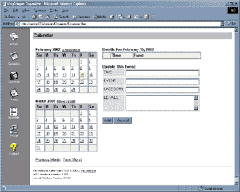

| VerySimple Organizer 2.0: Calendar, Contacts, Task List and Inbox |
 VerySimple Organizer is a set of four scripts: calendar.pl, contacts.pl, tasks.pl and new in version 2.0 inbox.pl . Together they can be used as a standard personal or workgroup organizer. The functionality is similar to online services such as MSN and Yahoo, and windows applications like MS Outlook or Lotus Notes.
These scripts are much simpler than any of the above mentioned programs. However, they can still be very useful when you need to share information with a small group of people. You could use it for a social club, work team or whatever.
All three scripts are easy to install and customize. Color and layout settings can be changed using the browser-based setup program. You can also add, remove or change the field names to suit your needs.
Limitations:
If you plan to use this script in a multi-user environment, you will want to enable file locking. This is done in the setup screen. The setup field is called UseFileLocking and you will want to change the value from a 0 to a 1
The datafile size may be a consideration. I have used these programs to edit datafiles of over 15,000 records without a noticable slowdown. Depending on your server and the number of users, you may have different results. If you do use this software for something important, I'd recommend creating backup copies of your datafiles regularly.
System Requirements
The scripts will not run, displaying a 500 Server Error if you have an outdated version of Perl installed. If you have a current version of Perl, but are missing some modules, the scripts will tell you which modules are missing. In general, your system admin will need to install Perl and the required modules. If you administrate your own server, you can download Perl and all required modules from http://www.cpan.org/ or http://www.activestate.com/
Technical Support
Technical support for VerySimple scripts is provided through the VerySimple support forum at http://www.verysimple.com/support/ If you have questions or problems, you may find it already answered there. If it is not answered, you can post a question and receive e-mail when an answer is posted. Because VerySimple is mostly the spare-time work of one person, there is no company to call or e-mail for support. VerySimple software depends upon the support of it's users. Since this software is offered for free, please consider visiting the support forum and contributing your knowledge.
About 500 Server Errors: Before you post a message or inquire about a 500 server error, you will need more information. A 500 server error is not enough information to troubleshoot your problem. It basically means that the web server has no idea what went wrong, so it didn't display the page. To see what the problem is, you need to see what the real error message is. There are two ways to find the real error message: check the server error logs, or run the script from the command line. The location of your server error logs depends on your server configuration.
UNIX Installation
Window Installation
Configuring and Customizing The Scripts
Each of the three scripts can be configured through your browser. They get their configuration settings from the files calendar.cfg,contacts.cfg and tasks.cfg. These files are simply tab-delimited files containing the settings. You could edit them using a spreadsheet program such as MS Excel, or even a text editor such as NotePad. However, the program setup.pl was also included along with the other scripts. This program can be used to edit the configuration files easily though your browser.
When you open setup.pl in your browser, you'll see a link to each of the three configuration files. They all have similar settings having to do with colors, the script title, etc. The fields are fairly self explainatory and you can play with them to see how they effect the look of the scripts.
These fields below affect the functionality of the scripts, so you will want to be more careful when editing them:
FileName: This is the file that is used for storing the data. This file must be readable/writeable. The script will look for this file relative to the directory in which it is installed. So, it is not necessary to have the datafile in the same directory, however, you will have to use a relative path (ex: ../../datafiles/tasks.tab).
Delimiter: This is the delimiter character that is used for the datafile. By default all scripts use a tab character. If you have an existing datafile that you want to use that uses a different delimiter character, you can change it here in setup. It is recommended that you do not change this field.
ShowFields: Contacts.pl and tasks.pl have a "table view" and a "detail view". The table view displays a few fields for all of the records, while the detail view shows all fields for only one record. You can customize which fields will show on the table view by specifying the fieldnames here. Separate fieldnames with a comma (no spaces).
UseFileLocking: Enter a 1 or a 0 here if you enable or disable file locking. File locking prevents problems when more than one person is accessing a file at the same time. If you have more than one person using the scripts at once, it is recommended that you enable file locking. If you do this, the directory in which the .tab files are located must be writable by the script.
Special Setup For Inbox:
The first thing to mention about inbox.pl is that this is a BETA version and it does not function all that well. I'm including it just because it completes what you would normally expect from an organizer type software. This is my first stab at an email client, and to be honest, I don't have major plans to do much with it because it requires a bit of specialized expertise to make a good email client and I'm just not that interested in it! My plan is to find a better email client that is already written and bundle it with organizer. If you have an email client that you would like to share, please contact me.
With that said, the inbox script relies on several Perl modules to function correctly. It is likely that you will recieve an error about missing modules when you first try to run it. Check the system requirements section above to see what modules you need.
Once you have the modules required, you can configure inbox using the setup utility as all the other scripts. You need to set PopServer, PopUserId in order to read your mail. If you plan to send messages, then PopEmail and either SmtpServer or SendmailPath will need to be configured as well. The EncryptKey field is the encryption key used to encrypt your password cookie file, so it is not stored as plain-text on your machine. This can be any random word. The TempDir is a read/write directory on your server that the app can use to create temp files.
Advanced Customizing (Altering the database fields):
All three of the organizer scripts were written to track all of the information that you require. It may turn out that you need to store additional information about a task, such as the last updated date, progress status, or whatever. If you want to add an additional field, or remove an existing one, all you have to do is open the datafile using a spreadsheet or text editor program. The first line of the file are all of the fieldnames. They are separated by a tab character. You can delete existing fields, or add new ones by simply deleting or adding another field name separated by tab characters.
As long as you do not delete the fields labeled "ID", "COMPLETED" or "DATE" you can make any changes that you like to the columns. You can add or remove columns as you require. Keep in mind that you cannot change the number of fields without also updating the data. For that reason it is best if you make any customizations before you enter any data into the system. Otherwise you will have to open the datafile using a spreadsheet program and then export it.
Security Considerations:
The organizer scripts have no built-in security. If you are installing the script on a public server, it is recommended that you use whatever security mechanisms are available through the server. Unix/Apache normally controls security through .htaccess files and a password file. Windows/IIS Servers use the IIS Management Console, or the NTFS permissions. If you are on a virtual host, they may provide a web-based utility for this purpose.
Password protecting the entire installation directory is sufficient if you are the only person using the script, or you know everyone who will be using the script. For extra security, to prevent people from downloading your datafiles, it is recommended that you put further security on the "data" subdirectory so that it cannot be browsed. The data directory comes with an .htaccess file that will prevent people from accessing those file if you are on an Apache server.
Troubleshooting:
Error: Can't call method "Open" without a package or object reference at ... - This error occurs for one of three reasons. 1. The datafile was not found. 2. The datafile is not readable or 3. The datafile is not writable. If you only get this error only when you try to add or update a record, then 3 is the reason. The file is not writable. If you get this error when simply trying to look at a record, or open the script, then you'll know it's either 1 or 2. Double check that the file is where it should be, and that the web browser has permission to read it.
The script stalls for several seconds, then gives a warning about locking the file: This happens when the directory in which the .tab files are located is not writable by the web server account. The file-locking mechanism creates a "lock" file in the directory, so write permission on the file alone is not sufficient. You must allow write permission for the entire directory. If you are unable to do this, then you can still use the script, however file locking cannot be used. You can enable/disable file-locking in Setup.
The script produces no output, or writes only half of the page: different servers respond differently to the Perl buffering feature. You can experiment with this by editing this line in each script: $| = 1; This is commented out by default, but you can remove the comment to enable buffering. Try this both ways to see what works best on your server.
Visit the VerySimple Support forum at http://www.verysimple.com/support/ for more information.
Version History
(see the version history comments within each script for specific details)
2.0 - 02/15/02 - Added inbox.pl to the suite. Moved all image files into sub-directory "images" to allow easier management. Fixed FNF error that people were having in all scripts. Better error handling and reporting in all scripts. Updated vsDB module to fix various bugs.
1.6 - 10/02/01 - Moved all .cfg and .tab files into sub-directory "data" to allow easier security management. Fixed various inconsistencies with Show All and Sorting in combination with the Next/Previous Page links. Added Show/Hide Details and Event Links to Calendar. Minor asthetic changes to the navigation links and buttons.
1.5 - 8/22/01 - Added file locking. Fixed note field in task manager. Fixed bug with blank note field in task manager, fixed problem with line breaks in note fields, fixed Show All link in contact manager, fixed page count problem when records are filtered.
1.4 - Original release
© 2002, VerySimple.com